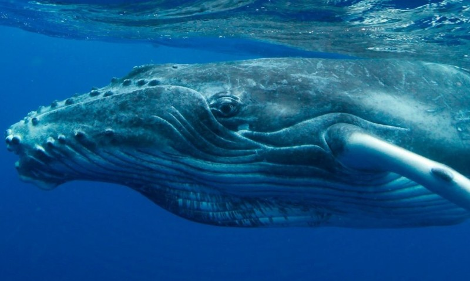

<DOCTYPE html>

  <head>
    <meta charset="utf-8">
    <title> delfín_de_río </title>
  </head>

<p></img><p>

<style>


/*Colocamos una imagen de fondo al 'body' de nuestras páginas*/

body {  
  
  background-color: #777; 
}


/*Creamos la clase 'center' de forma que podamos centrar, por ejemplo, las tablas de nuestras páginas*/

.center{

	margin-left: auto;
	margin-right: auto;
}


/*Le damos formato a los encabezados H1*/
h1 {
  font-weight: bold;
  text-align: center;  
  font-family: Monaco, "Bitstream Vera Sans Mono", "Lucida Console", Terminal, monospace;
  color: #fff;
  
}

h2 {

  font-weight: bold;
  text-align: left;  
  font-family: Monaco, "Bitstream Vera Sans Mono", "Lucida Console", Terminal, monospace;
  color: white	;

}

p, ul {

  font-family: Verdana, Helvetica, sans-serif;
  color: #fff;
  font-size: 16px; 

}


/*Le damos formato a los pies de imagen*/
figcaption {

  text-align: center;
}


/*Le damos formato a las imágenes*/
img {
  
  display: block;
  width: 50px;
  height: 50px;
  width: 100%;

}

</style>

</style>

<table border = '10' class= 'center' >  

<tr>
	<td><a href = 'html/casa.html'> <figcaption> Casa </figcaptaion></a></td>
                
	
           
        <td><a href = 'html/delfín.html'> <figcaptaion> Delfín</figcaptation></a></td>
	
 	<td><a href = 'html/ballena_jorobada.html'>  <figacaptation> Ballena_jorobada</figcaptation></a></td>
	
</tr>

<tr> 
	 <td><a href = 'html/delfín_de_río.html'> <figcatation> Delfín_de_río</figcaptation></a></td>

	 <td><a href = 'html/ballena_azul.html'> <figcaptation> Ballena_azul</figcaptation></a></td>
	
       	 <td><a href = 'html/orca.html'> <figcaptation> Orca</figcaptation></a></td>
               
</tr>
</html>
<h1> Platanistoidea </h1>
<h2> Los platanistoideos (Platanistoidea), conocidos vulgarmente como delfines de río (a diferencia de los delfínidos o delfines oceánicos), son una superfamilia de cetáceos odontocetos que tienen su hábitat en estuarios y cursos fluviales. Esta superfamilia se compone de dos familias. Todos los platanistoideos presentan largos y finos hocicos. Su vista es muy limitada (en algunas especies, inexistentes), por lo que el sentido de la ecolocalización les resulta indispensable a la hora de alimentarse y nadar. Su aleta dorsal es poco desarrollada. Tal vez una de las características más llamativas es, al igual que en la familia Monodontidae, la capacidad de mover el cuello, a diferencia de los delfines oceánicos, que poseen las vértebras cervicales fusionadas.</h2>

